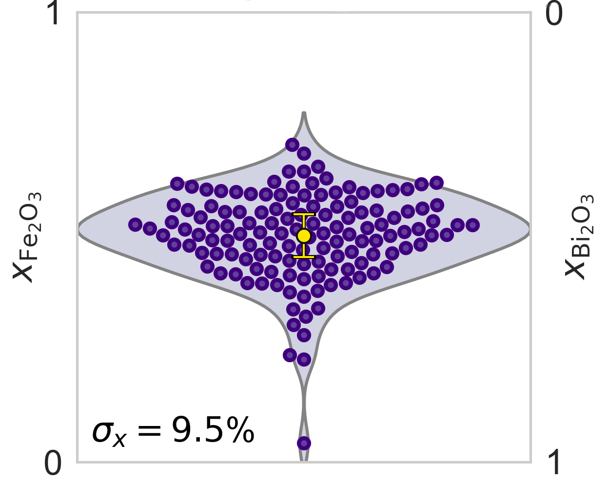

Tutorial: Quantify the extent of intermixing in precursor powders
When mixing two powder precursors together, use EDS to evaluate the extent of their spatial intermixing, known to affect solid-state reactions and the final impurity content.
AutoEMXSp offers a method to quantify the extent of intermixing, helping the rationalization of impurity formation in solid-state reactions. See for example Fig. 6 in:
Chem. Mater. 2025, 37, 6807−6822 (https://pubs.acs.org/doi/10.1021/acs.chemmater.5c01573)
Currently, only intermixing between two precursors species is supported. The code is however extensible to multi-precursor mixes, and contributions on this topic are welcome.
Output
The procedure to measure the extent of particle intermixing is analogous to the standard AutoEMXSp EDS compositional analysis workflow, except for a couple of small differences:
To enhance compositional measurement accuracy, given that the analysed material is known, AutoEMXSp uses standard reference values for EDS quantification that have been collected from the individual precursor chemistries, if available. If not available, the regular P/B reference values are used instead.
In the
Analysisfolder, the output will include a violin plot showing the distribution of molar fractions (x) of the two precursors measured with each EDS spot spectrum, such as the example below.
{kind=link}

The distribution and the standard deviation (σ) of measured molar fractions will give a sense of how well intermixed are the precursors. Two well-mixed precursors will lead to a very tight standard deviation around the precursor molar ratio at which they have been mixed (1:1 in the image above). Typically, σ~5 indicates very well mixed precursors.
Always keep in mind that the EDS X-ray generation volume has a finite size, below which the intermixing cannot be evaluated. For example, supposing a 1-um generation depth, atomically intermixed species will yield very similar measurements as intermixed nanoscale regions, resulting for example from spinoidal decomposition. Use the Kanaya-Okayama equation to estimate the X-ray generation depth.
Workflow
Step 1 - Measure Precursor Standards
Note that this step is not essential, but will genearlly contribute to an improved compositional measurement accuracy.
Follow the Experimental Standards Measurement Tutorial to create standard reference values for each powder material that you’ll want to mix and measure.
The only difference is that you should set
powder_meas_cfg_kwargs.is_known_powder_mixture_meas = True.
This will trigger two configurations:
exp_stds_meas_cfg_kwargs.use_for_mean_PB_calc = False; this prevents the P/B values measured on particles being used for regular quantification, which should preferably employ reference P/B values acquired from bulk samples.exp_stds_meas_cfg_kwargs.generate_separate_std_dict = True; this creates a new standard file for a set of precursor mix measurements for a specific project, and saves it inexp_std_dir. Ifexp_std_diris left toNone, the default path will be used (i.e.,autoemxsp/Std_measurements).
Once all standards are measured, copy the EDS_Stds_{beam-energy}keV.json
file from exp_std_dir to the project folder, defined
through results_dir in the scripts employed in Step 2.
Note that you may try skipping this step, and directly go to Step 2. If unsatisfied with the quantification results, you can go back to Step 1, and successivelly re-quantify the spectra acquired in Step 2 following Step 8 in this Tutorial.
Step 2 - Run Acquisition & Analysis
Follow the instructions from the Compositional Characterization Tutorial.
The only differences are that, when preparing the acquisition script (i.e.,
Run_Acquisition_Quant_Analysis.py), you should:
As a list of candidate phases, provide only the two compositions that are intermixed, (as values for the
cndkey insamples).Set
use_project_specific_std_dict = Trueto use the standard reference dictionary saved in the project folder, defined inresults_dir. If not found, it will use the default standard reference values.Set
powder_meas_cfg_kwargs.is_known_powder_mixture_meas = True. This option tells AutoEMXSp to use reference P/B values obtained from the known powder compositions, instead of the Mean of reference values measured also from other chemistries. Note that you can always turn off this option later when quantifying the spectra inRun_Quantification_Analysis.py, settingis_known_precursor_mixture = Falseand passing this option tobatch_quantify_and_analyze(). In this case, AutoEMXSp will use the P/B reference values commonly employed during regular compositional characterization of unknown sample chemistries for phase identification.